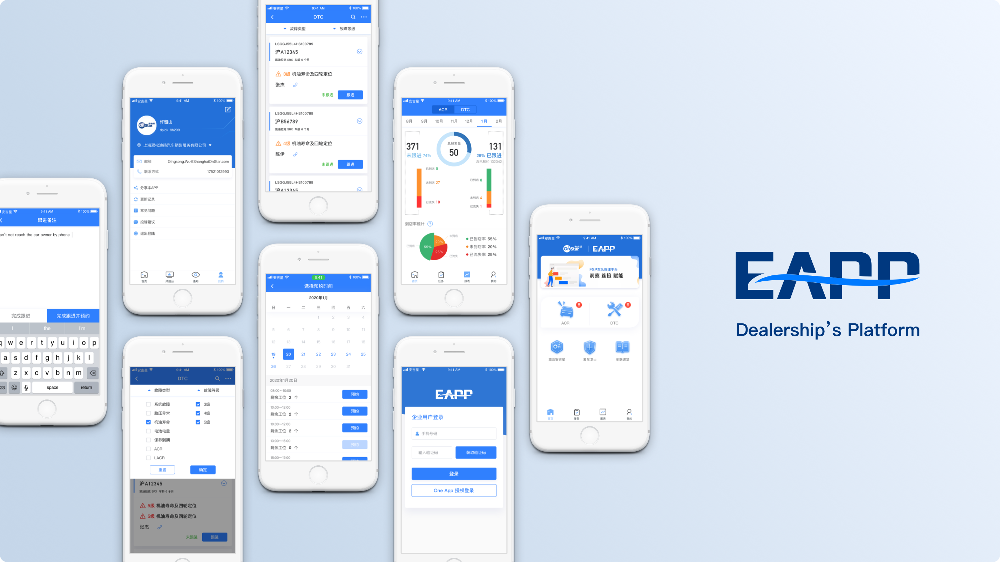

Hi, I'm Eva Chen
See My ProjectI'm currently a master's student studying HCI at University of Michigan School of Information and a former UX designer at General Motors. The project domains I've worked on include voice assistance, gamification membership system, health service, fleet services, etc.

Membership System
#Gamification #Experimental UI #Design Workshop
The membership system is created to incent the users to be active using the OnStar service.

Xiao O
#Voice Assistance #IP Image
Little O is a voice assistant on both OnStar mobile app and Buick vehicles. It improves the connectivity among “People, Car, Life.”
EAPP
#B2B #Data Driven Service #User Interview
General Motors car dealerships use EAPP to improve their relationship with car owners.